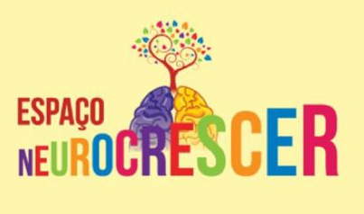

Bem-vindo ao Espaço NeuroCrescer!
No Espaço NeuroCrescer, oferecemos atendimentos psicológicos, neuropsicológicos, psicopedagógicos, entre outros, sempre de forma humanizada, a fim de proporcionar apoio e orientação aos pais e aos filhos.
Nossa equipe se baseia nos estudos da neurociência para compreender como o cérebro aprende, e desenvolvemos nosso projeto com o foco na processo de aprendizagem. Esta ocorre através de sensações multissensoriais, por meio da imitação e também do lúdico. Aqui, mais do que diagnosticar, buscamos avaliar para buscar uma intervenção mais efetiva e afetiva. Se a sua criança apresenta dificuldades de alfabetização ou questões emocionais e comportamentais, marque sua consulta conosco via WhatsApp.
Imagem de pikisuperstar no Freepik


Sou neuropsicopedagoga formada em Pedagogia pela Universidade Paulista UNIP, além de ter pós-graduação em Neuropsicopedagogia pelo Centro Universitário Internacional - UNINTER. Também sou graduanda em Psicologia na Universidade Estácio de Sá.

Sou nutricionista clínica pós-graduada em Nutrição Materno Infantil pelo IMEN - SP. Também tenho aprimoramento em transtornos alimentares no Hospital das Clínicas, da Faculdade de Medicina da USP. Por fim, sou especialista em Bioquímica, Fisiologia e treinamento em Nutrição Desportiva (UNICAMP).

Fonoaudióloga especialista em atendimento infantil, trabalho com atraso de fala e linguagem. Lido ainda com trocas e transtornos motores da fala. Também atuo com comunicação alternativa e aumentativa.

Sou formada em Psicologia na Universidade Nove de Julho - UNINOVE e trabalho com terapia cognitivo comportamental.
Centro Comercial Bosques da Vila - Rua dos Coqueirais, 236 - Sala 15 - Jardim Petrópolis, Cotia - SP, 06719-460